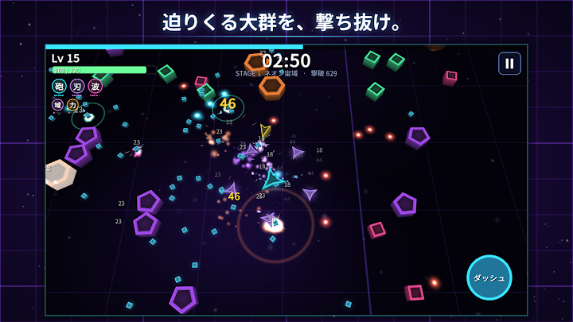
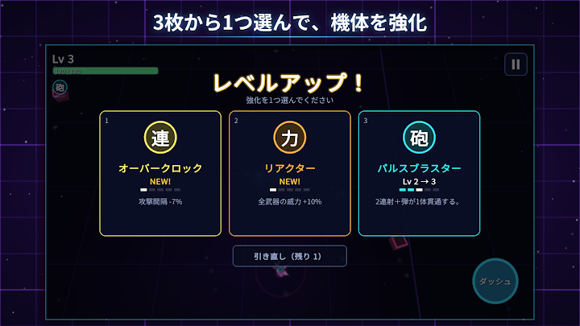
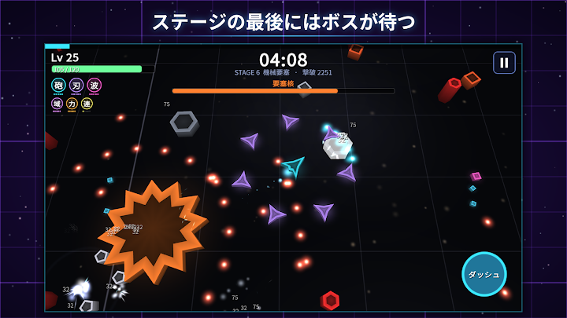
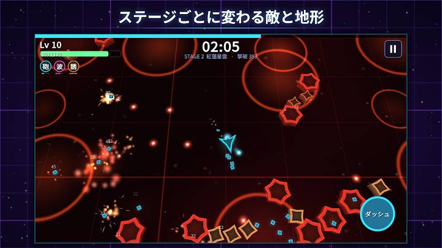
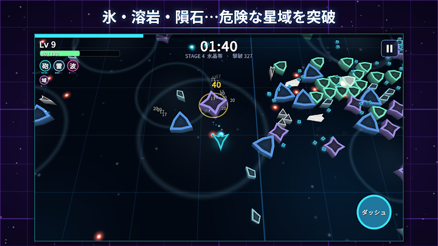
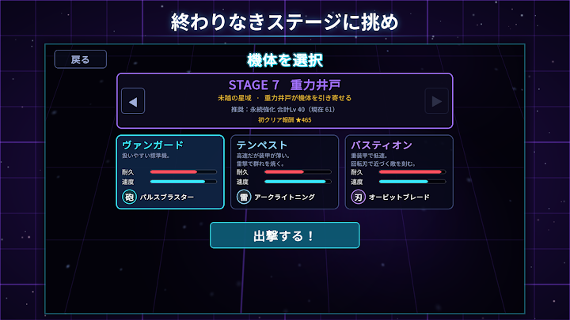
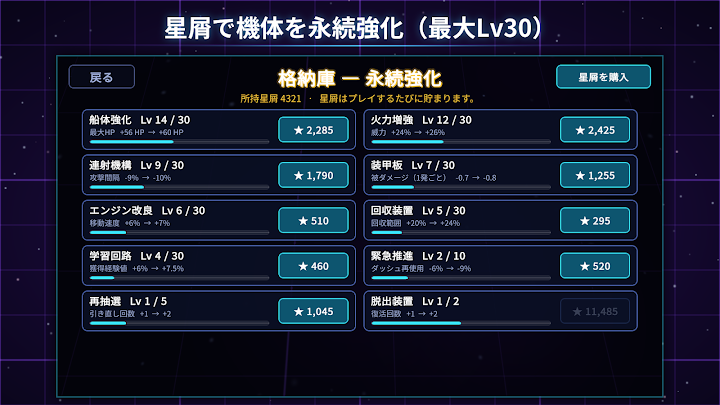
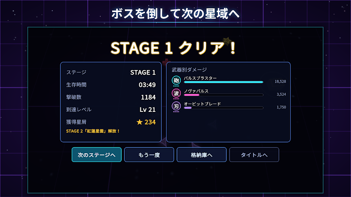

STEAM BASE
STEAM BASESTARFALL SURVIVOR
サバイバーシューティングSurvivor shooter生存射擊生存射击서바이버 슈팅四方から押し寄せる敵の大群を撃ち抜く、ネオンのサバイバーシューティング。操作は移動とダッシュだけ、武器は自動で撃ちます。A neon survivor shooter. You only move and dash — your weapons fire on their own as the swarm closes in.射穿從四面八方湧來的大批敵人，霓虹風格的生存射擊遊戲。操作只有移動與衝刺，武器會自動射擊。射穿从四面八方涌来的大批敌人，霓虹风格的生存射击游戏。操作只有移动与冲刺，武器会自动射击。사방에서 밀려오는 적의 대군을 쏘아 쓰러뜨리는 네온 서바이버 슈팅. 조작은 이동과 대시뿐이며, 무기는 자동으로 발사됩니다.

スクリーンショットScreenshots螢幕截圖截图스크린샷








STARFALL SURVIVOR はどんなゲーム?What is STARFALL SURVIVOR?STARFALL SURVIVOR 是什麼樣的遊戲？STARFALL SURVIVOR 是什么样的游戏？STARFALL SURVIVOR는 어떤 게임인가요?
撃て。避けろ。生き延びろ。
STARFALL SURVIVOR は、四方から押し寄せる敵の大群を撃ち抜いて生き延びる、ネオンのサバイバーシューティングです。操作は移動とダッシュだけ。武器は自動で発射されます。
遊び方
- 画面をドラッグして移動。ダッシュ中は無敵で、敵の群れをすり抜けられます
- 敵が落とす結晶を集めてレベルアップ。3枚のカードから強化を1つ選びます
- 1ステージは約4〜5分。最後に現れるボスを倒すとクリアし、次のステージが解放されます
何を装備するかが勝負
- 武器は5種類：パルスブラスター／シーカーミサイル／オービットブレード／アークライトニング／ノヴァパルス
- パッシブは5種類：強化装甲／推進器／リアクター／オーバークロック／フィールド増幅器
- 1回のプレイで装備できるのは、武器3つ・パッシブ3つまで。組み合わせで戦い方が変わります
ステージごとに変わる戦場
- 8つの星域：ネオン宙域、紅蓮星雲、小惑星帯、氷晶帯、毒霧の海、機械要塞、重力井戸、星墜の果て
- 溶岩だまり、弾をさえぎる小惑星、滑る氷、流れてくる毒の雲、レーザー柵、重力井戸、降りそそぐ隕石
- 星域ごとに敵の姿も攻撃も変わり、最後にはその星域のボスが待ち受けます
- 8つを越えると2周目へ。敵はさらに強くなり、終わりはありません
永続強化
- プレイで手に入る「星屑」で、機体を永続的に強化（主要7項目は最大Lv30）
- 先のステージほど手ごわくなります。強化を重ねて、少しずつ先へ進むゲームです
- ステージをクリアしていくと、新しい機体「テンペスト」「バスティオン」が解放されます
そのほか
- 広告なし
- オフラインで遊べます（購入時を除く）
- 日本語／英語に対応
- 星屑はアプリ内で購入することもできます（任意）。購入しなくても、すべてのステージ・機体・強化を遊べます
こんな方におすすめ
- サバイバー系、ヴァンサバ系のゲームが好き
- ローグライトで少しずつ強くなるのが好き
- 片手で遊べる短時間のシューティングを探している
- 敵の大群を一気に吹き飛ばす爽快感を味わいたい
Shoot. Dodge. Survive.
STARFALL SURVIVOR is a neon survivor shooter. Swarms close in from every side. You only steer and dash, and your weapons fire on their own.
HOW TO PLAY
- Drag anywhere to move. Dash to slip through the swarm: you are invulnerable while dashing
- Collect the crystals enemies drop to level up, then pick one of three upgrade cards
- A stage lasts 4 to 5 minutes. Destroy the boss at the end to clear it and unlock the next stage
YOUR LOADOUT DECIDES THE FIGHT
- 5 weapons: Pulse Blaster, Seeker Missiles, Orbit Blades, Arc Lightning, Nova Pulse
- 5 passives: Hull Plating, Thrusters, Reactor Core, Overclock, Field Amplifier
- You can equip only 3 weapons and 3 passives per run, so every pick matters
EVERY STAGE IS A DIFFERENT BATTLEFIELD
- 8 sectors: Neon Expanse, Crimson Nebula, Asteroid Belt, Frost Field, Toxic Sea, Machine Fortress, Gravity Well, Starfall Abyss
- Lava pools, asteroids that block shots, slippery ice, drifting toxic clouds, laser fences, gravity wells and meteor strikes
- Each sector has its own enemy shapes, attacks and boss
- After sector 8 the loop starts again with tougher enemies. There is no end
PERMANENT UPGRADES
- Spend the stardust you earn on permanent upgrades (the seven core stats go up to Lv 30)
- Later stages are tough: upgrade, push a little further, repeat
- Clear stages to unlock two more ships, Tempest and Bastion
ALSO
- No ads
- Playable offline (except purchases)
- English and Japanese
- Stardust can also be bought in the app (optional). Every stage, ship and upgrade can be reached without paying
射擊。閃避。活下去。
STARFALL SURVIVOR 是一款霓虹風格的生存射擊遊戲，射穿從四面八方湧來的大批敵人，努力活下去。操作只有移動與衝刺。武器會自動發射。
玩法
- 拖曳畫面移動。衝刺期間無敵，可穿過敵群
- 收集敵人掉落的結晶來升級。從 3 張卡片中選擇 1 項強化
- 每關約 4～5 分鐘。擊敗最後出現的頭目即可過關，並解鎖下一關
裝備什麼決定勝負
- 武器有 5 種：脈衝爆能槍／追蹤飛彈／環繞刃／電弧閃電／新星脈衝
- 被動有 5 種：強化裝甲／推進器／反應爐／超頻／力場放大器
- 單次遊玩最多可裝備 3 個武器、3 個被動。組合不同，戰法也會改變
每一關都不同的戰場
- 8 個星域：霓虹宙域、紅蓮星雲、小行星帶、冰晶帶、毒霧之海、機械要塞、重力井、星墜盡頭
- 熔岩池、擋住子彈的小行星、打滑的冰面、飄來的毒雲、雷射柵欄、重力井、傾瀉而下的隕石
- 每個星域的敵人外型與攻擊都不同，最後有該星域的頭目等著你
- 通過 8 個之後進入第 2 輪。敵人會更強，沒有終點
永久強化
- 用遊玩中獲得的「星塵」永久強化機體（主要 7 項最高 Lv30）
- 越後面的關卡越難纏。這是一款不斷強化、一點一點前進的遊戲
- 持續通關後，會解鎖新機體「Tempest」「Bastion」
其他
- 無廣告
- 可離線遊玩（購買時除外）
- 支援日語／英語
- 也可以在應用程式內購買星塵（可自由選擇）。即使不購買，也能玩到所有關卡、機體與強化
推薦給這樣的你
- 喜歡生存類、《吸血鬼倖存者》類的遊戲
- 喜歡在 Roguelite 中一點一點變強
- 正在找單手就能玩的短時間射擊遊戲
- 想體驗一口氣轟飛大批敵人的爽快感
射击。闪避。活下去。
STARFALL SURVIVOR 是一款霓虹风格的生存射击游戏，射穿从四面八方涌来的大批敌人，努力活下去。操作只有移动与冲刺。武器会自动发射。
玩法
- 拖曳画面移动。冲刺期间无敌，可穿过敌群
- 收集敌人掉落的结晶来升级。从 3 张卡片中选择 1 项强化
- 每关约 4～5 分钟。击败最后出现的首领即可过关，并解锁下一关
装备什么决定胜负
- 武器有 5 种：脉冲爆能枪／追踪导弹／环绕刃／电弧闪电／新星脉冲
- 被动有 5 种：强化装甲／推进器／反应炉／超频／力场放大器
- 单次游玩最多可装备 3 个武器、3 个被动。组合不同，战法也会改变
每一关都不同的战场
- 8 个星域：霓虹宙域、红莲星云、小行星带、冰晶带、毒雾之海、机械要塞、重力井、星坠尽头
- 熔岩池、挡住子弹的小行星、打滑的冰面、飘来的毒云、激光栅栏、重力井、倾泻而下的陨石
- 每个星域的敌人外型与攻击都不同，最后有该星域的首领等着你
- 通过 8 个之后进入第 2 轮。敌人会更强，没有终点
永久强化
- 用游玩中获得的“星尘”永久强化机体（主要 7 项最高 Lv30）
- 越后面的关卡越难缠。这是一款不断强化、一点一点前进的游戏
- 持续通关后，会解锁新机体“Tempest”“Bastion”
其他
- 无广告
- 可离线游玩（购买时除外）
- 支持日语／英语
- 也可以在应用内购买星尘（可自由选择）。即使不购买，也能玩到所有关卡、机体与强化
推荐给这样的你
- 喜欢生存类、《吸血鬼幸存者》类的游戏
- 喜欢在 Roguelite 中一点一点变强
- 正在找单手就能玩的短时间射击游戏
- 想体验一口气轰飞大批敌人的爽快感
쏴라. 피해라. 살아남아라.
STARFALL SURVIVOR는 사방에서 밀려오는 적의 대군을 쏘아 쓰러뜨리며 살아남는 네온 서바이버 슈팅입니다. 조작은 이동과 대시뿐. 무기는 자동으로 발사됩니다.
플레이 방법
- 화면을 드래그해 이동. 대시 중에는 무적이라 적의 무리를 빠져나갈 수 있습니다
- 적이 떨어뜨리는 결정을 모아 레벨 업. 3장의 카드 중 강화를 하나 고릅니다
- 1스테이지는 약 4~5분. 마지막에 나타나는 보스를 쓰러뜨리면 클리어하고 다음 스테이지가 해금됩니다
무엇을 장비하느냐가 승부
- 무기는 5종류: 펄스 블래스터/시커 미사일/오빗 블레이드/아크 라이트닝/노바 펄스
- 패시브는 5종류: 강화 장갑/추진기/리액터/오버클록/필드 증폭기
- 1회 플레이에서 장비할 수 있는 것은 무기 3개, 패시브 3개까지. 조합에 따라 전투 방식이 달라집니다
스테이지마다 달라지는 전장
- 8개의 성역: 네온 우주 해역, 홍련 성운, 소행성대, 빙정대, 독안개의 바다, 기계 요새, 중력 우물, 별이 떨어지는 끝
- 용암 웅덩이, 탄을 막는 소행성, 미끄러운 얼음, 흘러오는 독구름, 레이저 울타리, 중력 우물, 쏟아지는 운석
- 성역마다 적의 모습도 공격도 바뀌며, 마지막에는 그 성역의 보스가 기다립니다
- 8개를 넘으면 2회차로. 적은 더욱 강해지며 끝은 없습니다
영구 강화
- 플레이로 얻는 '별가루'로 기체를 영구적으로 강화(주요 7개 항목은 최대 Lv30)
- 뒤쪽 스테이지일수록 상대하기 까다로워집니다. 강화를 거듭하며 조금씩 앞으로 나아가는 게임입니다
- 스테이지를 클리어해 나가면 새로운 기체 '템페스트', '바스티온'이 해금됩니다
그 밖에
- 광고 없음
- 오프라인에서 즐길 수 있습니다(구매 시 제외)
- 일본어/영어 지원
- 별가루는 인앱 구매도 가능합니다(선택 사항). 구매하지 않아도 모든 스테이지·기체·강화를 즐길 수 있습니다
よくある質問FAQ常見問題常见问题자주 묻는 질문
無料で遊べますか?Is it free?可以免費玩嗎？可以免费玩吗？무료로 즐길 수 있나요?
無料で遊べます。広告はありません。「星屑」はアプリ内で購入することもできます（任意）が、購入しなくても、すべてのステージ・機体・強化を遊べます。Yes, and there are no ads. Stardust can be bought in-app (optional), but every stage, ship and upgrade can be played without paying.可免費遊玩。沒有廣告。「星塵」可在應用程式內購買（可自由選擇），但即使不購買，也能玩到所有關卡、機體與強化。可免费游玩。没有广告。“星尘”可在应用内购买（可自由选择），但即使不购买，也能玩到所有关卡、机体与强化。무료로 즐길 수 있습니다. 광고는 없습니다. '별가루'는 인앱 구매도 가능하지만(선택 사항), 구매하지 않아도 모든 스테이지·기체·강화를 즐길 수 있습니다.
オフラインで遊べますか?Can I play offline?可以離線玩嗎？可以离线玩吗？오프라인에서도 즐길 수 있나요?
はい、購入時を除いてオフラインで遊べます。Yes, except when making a purchase.可以，除購買時之外都能離線遊玩。可以，除购买时之外都能离线游玩。네, 구매 시를 제외하고 오프라인에서 즐길 수 있습니다.
どんな操作ですか?How do the controls work?要怎麼操作？要怎么操作？어떻게 조작하나요?
画面をドラッグして移動するだけです。武器は自動で発射され、ダッシュ中は無敵になります。Drag to move. Weapons fire automatically, and you are invincible while dashing.只要拖曳畫面移動即可。武器會自動發射，衝刺期間處於無敵狀態。只要拖曳画面移动即可。武器会自动发射，冲刺期间处于无敌状态。화면을 드래그해 이동하기만 하면 됩니다. 무기는 자동으로 발사되며, 대시 중에는 무적이 됩니다.
iPhone（iOS）でも遊べますか?Is it on iPhone (iOS)?iPhone（iOS）也能玩嗎？iPhone（iOS）也能玩吗？iPhone(iOS)에서도 즐길 수 있나요?
現在は Android 版（Google Play）のみです。App Store（iOS）では配信していません。Not at the moment — it is only on Android (Google Play), not on the App Store.目前僅提供 Android 版（Google Play），App Store（iOS）上沒有上架。目前仅提供 Android 版（Google Play），App Store（iOS）上没有上架。현재는 Android 버전(Google Play)만 제공합니다. App Store(iOS)에서는 서비스하지 않습니다.